In diesem Blogpost geht es um die Weiterentwicklung des Motorcontrollers “Micro-Motor” zur Version 2. Die bisherige Entwicklung des Motorcontrollers kann in mehreren älteren Blogposts nachgelesen werden.
Von den im vorherigen Blog-Post aufgelisteten Shuntverstärkern sind die beiden Bauteile von Analog Devices (ehem. Linear Technologie) und Texas Instruments in die nähere Auswahl gekommen. Es wurden von TIs INA240 Muster bestellt mit Gain 50 und 200, sowie Gain 20 und 50 beim LT1999, da bei diesem keine Variante mit Gain über 50 verfügbar ist.
Als Shunt dient ein 5mΩ 1W 1% SMD-Widerstand in Baugröße 0805 (KOA Speer TLR2ATTD5L00F). Durch die kleine Bauform ist ein kompakter Aufbau gewährleistet, wie in den Datenblättern empfohlen (LT1999 Seite 16 bzw. INA240 Seite 27).
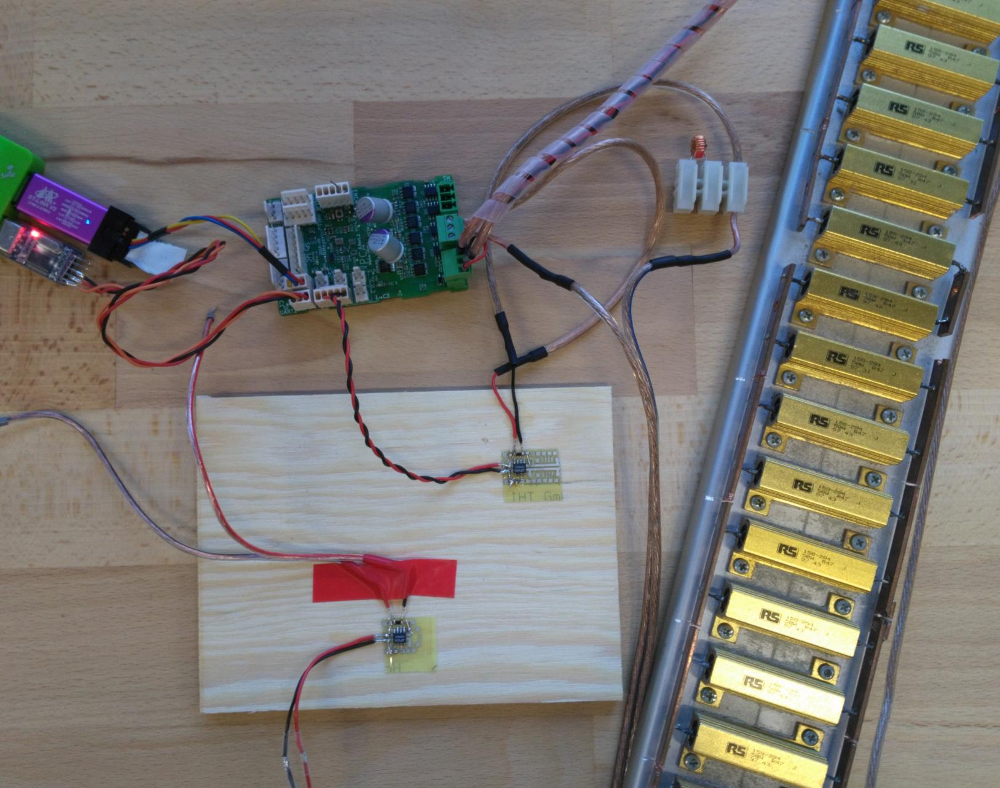
Der weitere Messaufbau besteht aus einem Motor-Controller über welchen Frequenz und Duty-Cycle eingestellt werden können. Als Last dient ein 2kW Lastwiderstand mit 9,4Ω nach Ground, wodurch ein Strom von maximal 2,1A bei 20V durch den Shunt fließen. Die Induktivität des Aufbaus ist leider nicht bekannt, das keine geeigenten Messgeräte zur Verfügung standen.
An den folgenden Messungen ist leicht zu erkennen, dass der LT1999 in unserem Fall ungeeignet zur Strommessung In-Phase ist. Der durch die Common-Mode-Spannungsänderung erzeugte Spike am Ausgang ist größer als das erwartete Mess-Signal, gerade bei kleinen Duty-Cycles (<10%) verschwindet der Messwert hier vollständig.
Der Shuntverstärker INA240 eignet zur Strommessung In-Phase, hier ist kein störender Einfluss der Common-Mode-PWM-Signals auf den Ausgang zu beobachten. Die Variante INA240A4 mit Gain 200 kann mit einem 5mΩ Shuntwiderstand nur etwa 2A messen, der Messbereich von 10A beim INA240A2 (Gain 50) ist für den Motorcontroller besser geeignet. Denkbar wäre es natürlich auch einen kleineren Shuntwiderstand zu wählen, jedoch würde dies aufgrund von stärkeren Einkoppplungen wahrscheinlich schlechtere Ergebnisse liefern.
Auf den Osziloskop-Bildern ist in Gelb der Ausgang des Shuntverstärkers zu sehen. Auf Kanal 2 (Blau) ist die Spannung an der Motor-Phase beziehungsweise über dem Last-Widerstand dargestellt.
Duty-Cycle 30%
In-Phase
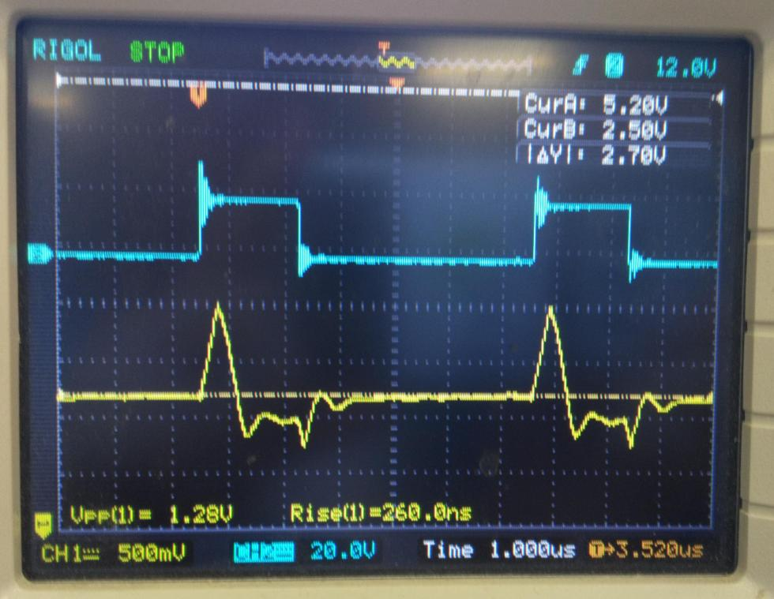
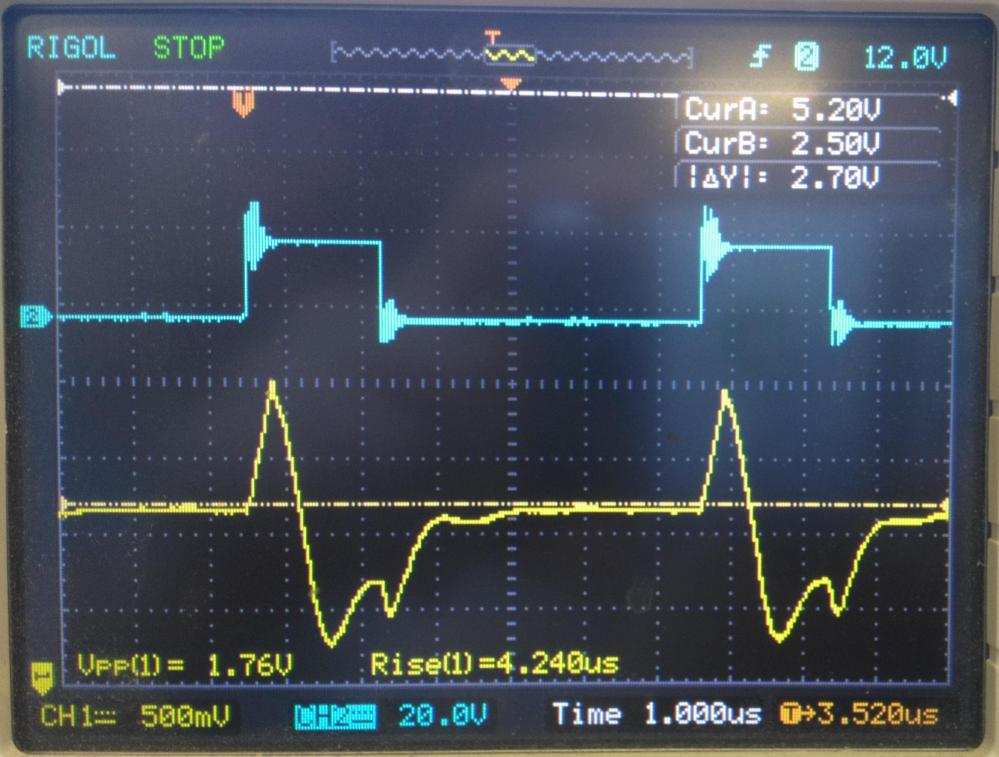
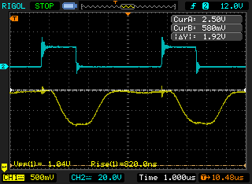
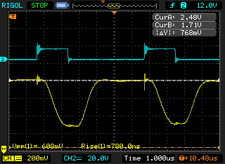
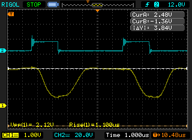

Low-Side
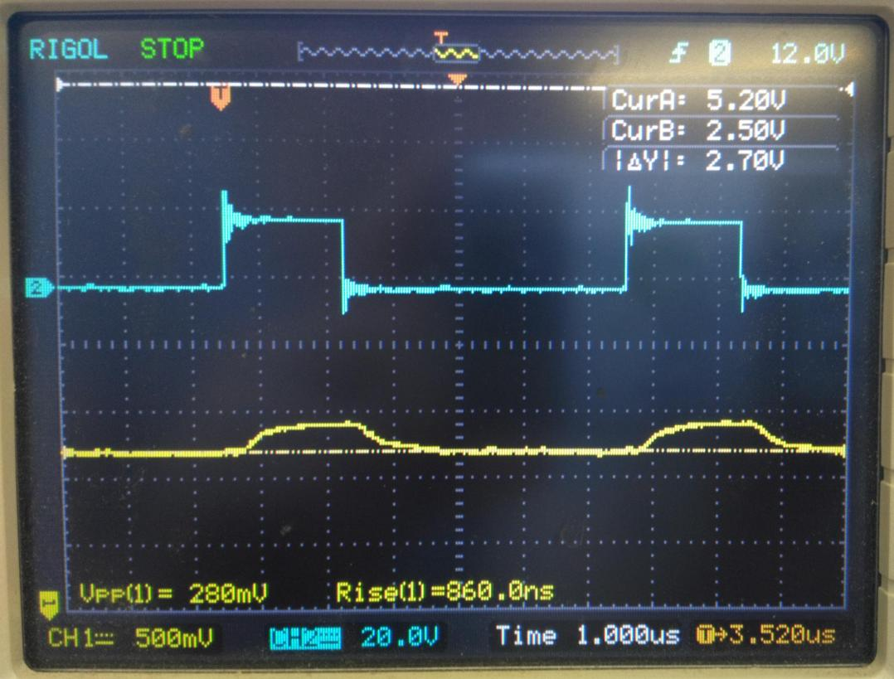
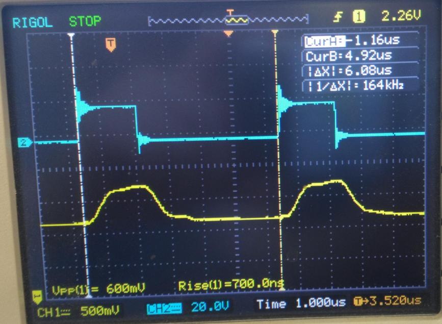
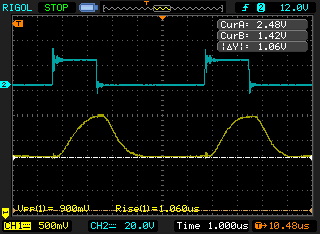
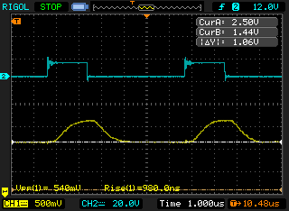
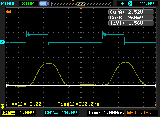
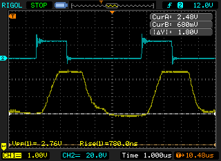
Duty-Cycle 5%
In-Phase
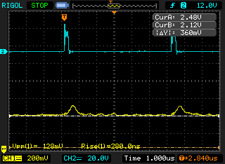
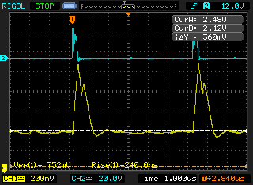
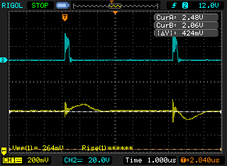
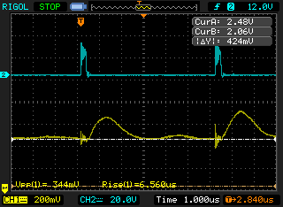
Low-Side
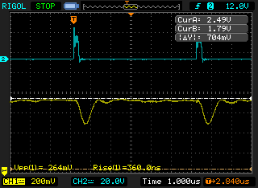
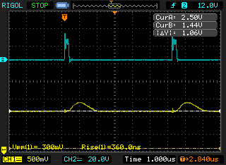
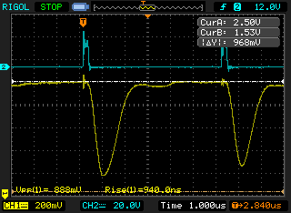